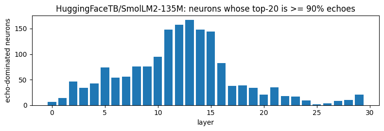
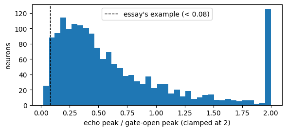

SwiGLU gate-sign regimes: double-negative echoes¶
A gated MLP neuron computes \(\text{post} = \text{act}(\text{gate}) \cdot \text{value}\). With SiLU or GELU, \(\text{act}(\text{gate})\) is a small negative number when the gate is closed, so a closed gate times a negative value gives a positive output. Goodfire’s essay Neural Networks Are Already Clean calls this the double-negative regime. It reports that the echo is usually small, but for about 4% of neurons it fills the whole top of the positive activation list. Max-activating-example dashboards then describe these neurons by their echo.
This notebook uses only existing TransformerBridge hook points to:
split every neuron’s output by the signs of its two factors;
find neurons whose top activations are echoes, and compare the echo with the neuron’s gate-open peak;
remove the echo with a forward hook and measure the loss change against two controls.
It runs SmolLM2-135M on CPU in float32 with a small token budget, so the saved outputs stay portable. Change DEVICE and the token budgets for real analyses. The last section lists full-size results for three models. Proposal: #1933.
[1]:
# NBVAL_IGNORE_OUTPUT
import os
os.environ["HF_HUB_DISABLE_PROGRESS_BARS"] = "1"
os.environ["TOKENIZERS_PARALLELISM"] = "false"
import datasets
import matplotlib.pyplot as plt
import pandas as pd
import torch
import torch.nn.functional as F
from transformer_lens.model_bridge import TransformerBridge
from transformer_lens.utilities import SUPPORTED_ACTIVATIONS
datasets.disable_progress_bars()
torch.set_grad_enabled(False)
DEVICE = "cpu"
MODEL_NAME = "HuggingFaceTB/SmolLM2-135M"
SEQ_LEN = 256
SWEEP_TOKENS = 16_384 # the full-size runs below used ~262k
EVAL_TOKENS = 4_096 # the full-size runs below used 65k
TOP_K = 20
ECHO_DOMINATED = 0.9 # share of a neuron's top-k that must be echoes
SKIP = 1 # position 0 collects attention-sink activations; leave it out of every statistic
The four sign regimes¶
gate |
value |
act(gate) |
post |
regime |
|---|---|---|---|---|
> 0 |
> 0 |
positive |
positive |
open, positive pole |
> 0 |
< 0 |
positive |
negative |
open, negative pole |
< 0 |
> 0 |
small negative |
negative |
closed |
< 0 |
< 0 |
small negative |
positive |
closed: the echo |
The echo is bounded by \(|\min \text{act}| \cdot |\text{value}|\). The bound depends on the activation, so it is model-specific:
[2]:
grid = torch.linspace(-10, 0, 1_000_001)
for name in ("silu", "gelu", "gelu_pytorch_tanh"):
print(f"min {name:18s} = {SUPPORTED_ACTIVATIONS[name](grid).min().item():.3f}")
min silu = -0.278
min gelu = -0.170
min gelu_pytorch_tanh = -0.170
Load a raw Bridge¶
The hook aliases mlp.hook_pre (gate), mlp.hook_pre_linear (value) and mlp.hook_post (their product) exist on every gated MLP bridge, including fused gate/up projections (JointGateUpMLPBridge). The activation comes from the model config, and a factorization check confirms the hooks recompose the MLP exactly.
[3]:
# NBVAL_IGNORE_OUTPUT
model = TransformerBridge.boot_transformers(MODEL_NAME, device=DEVICE, dtype=torch.float32).eval()
[4]:
act = SUPPORTED_ACTIVATIONS[model.cfg.act_fn]
N_LAYERS, D_MLP = model.cfg.n_layers, model.cfg.d_mlp
print(f"{MODEL_NAME}: {N_LAYERS} layers x {D_MLP} neurons, act_fn={model.cfg.act_fn}")
def run_with_gated_mlp(model, tokens, on_layer):
"""Forward once, calling on_layer(layer, gate, value, post) as soon as each MLP finishes.
Only one layer's factors are alive at a time, so memory does not grow with depth.
"""
pending = {}
def keep(key):
def hook(tensor, hook):
pending[key] = tensor
return hook
def finish(layer):
def hook(tensor, hook):
on_layer(layer, pending.pop(("gate", layer)), pending.pop(("value", layer)), tensor)
return hook
fwd_hooks = []
for layer in range(model.cfg.n_layers):
fwd_hooks += [
(f"blocks.{layer}.mlp.hook_pre", keep(("gate", layer))),
(f"blocks.{layer}.mlp.hook_pre_linear", keep(("value", layer))),
(f"blocks.{layer}.mlp.hook_post", finish(layer)),
]
with model.hooks(fwd_hooks=fwd_hooks):
return model(tokens)
factor_error = []
run_with_gated_mlp(
model,
model.to_tokens("The quick brown fox jumps over the lazy dog."),
lambda layer, gate, value, post: factor_error.append((post - act(gate) * value).abs().max()),
)
print(f"max |post - act(gate) * value| over all layers: {max(factor_error).item():.1e}")
assert max(factor_error) < 1e-6
HuggingFaceTB/SmolLM2-135M: 30 layers x 1536 neurons, act_fn=silu
max |post - act(gate) * value| over all layers: 0.0e+00
Data¶
WikiText-2 at a pinned revision, tokenized as one stream and cut into fixed-length rows. Validation rows feed the sweep. Test rows feed the loss experiment, so the neurons are chosen and evaluated on different text.
[5]:
# NBVAL_IGNORE_OUTPUT
WIKITEXT = ("Salesforce/wikitext", "wikitext-2-raw-v1")
WIKITEXT_REVISION = "b08601e04326c79dfdd32d625aee71d232d685c3"
def token_rows(split, n_tokens):
text = "".join(
datasets.load_dataset(*WIKITEXT, split=split, revision=WIKITEXT_REVISION)["text"]
)
ids = model.tokenizer(text, add_special_tokens=False, return_tensors="pt").input_ids[0]
n_rows = n_tokens // SEQ_LEN
return ids[: n_rows * SEQ_LEN].view(n_rows, SEQ_LEN)
sweep_rows = token_rows("validation", SWEEP_TOKENS)
eval_rows = token_rows("test", EVAL_TOKENS)
[6]:
print(f"sweep rows {tuple(sweep_rows.shape)}, eval rows {tuple(eval_rows.shape)}")
sweep rows (64, 256), eval rows (16, 256)
Sweep: per-neuron top-k, tagged by regime¶
One streaming pass keeps, for every neuron:
its
TOP_Klargest outputs, each tagged as an echo or not;its
TOP_Kmost negative outputs;its echo peak, the largest positive output with the gate closed;
its gate-open peak, the largest \(|\text{post}|\) with the gate open.
The top of the list is what a max-activating-example dashboard shows. Counting regimes over all tokens instead would mostly measure near-zero activations.
[7]:
class Sweep:
def __init__(self, n_layers, d_mlp, k):
shape = (n_layers, d_mlp, k)
self.top_val = torch.full(shape, -torch.inf)
self.top_echo = torch.zeros(shape, dtype=torch.bool)
self.top_loc = torch.zeros(shape, dtype=torch.long)
self.bot_val = torch.full(shape, -torch.inf) # negated, so topk finds the most negative
self.bot_loc = torch.zeros(shape, dtype=torch.long)
self.echo_peak = torch.zeros(n_layers, d_mlp)
self.open_peak = torch.zeros(n_layers, d_mlp)
@staticmethod
def merge(old_val, new_val, *payloads):
"""Keep the k largest of old and new columns, carrying payloads along."""
val = torch.cat([old_val, new_val], 1)
best = val.topk(old_val.shape[1], dim=1).indices
return (val.gather(1, best),) + tuple(torch.cat(p, 1).gather(1, best) for p in payloads)
def update(self, layer, gate, post, row_offset):
gate, post = gate[:, SKIP:], post[:, SKIP:]
rows, positions, d = post.shape
loc = (row_offset + torch.arange(rows))[:, None] * SEQ_LEN + SKIP + torch.arange(positions)
gate, post, loc = gate.reshape(-1, d), post.reshape(-1, d), loc.reshape(-1)
closed = gate < 0
echo = closed & (post > 0)
k = self.top_val.shape[-1]
val, idx = post.topk(k, dim=0)
self.top_val[layer], self.top_echo[layer], self.top_loc[layer] = self.merge(
self.top_val[layer],
val.T,
(self.top_echo[layer], echo.gather(0, idx).T),
(self.top_loc[layer], loc[idx].T),
)
val, idx = (-post).topk(k, dim=0)
self.bot_val[layer], self.bot_loc[layer] = self.merge(
self.bot_val[layer], val.T, (self.bot_loc[layer], loc[idx].T)
)
self.echo_peak[layer] = self.echo_peak[layer].maximum(post.masked_fill(~echo, 0).amax(0))
self.open_peak[layer] = self.open_peak[layer].maximum(
post.abs().masked_fill(closed, 0).amax(0)
)
BATCH = 8
sweep = Sweep(N_LAYERS, D_MLP, TOP_K)
for start in range(0, len(sweep_rows), BATCH):
run_with_gated_mlp(
model,
sweep_rows[start : start + BATCH].to(DEVICE),
lambda layer, gate, value, post: sweep.update(layer, gate.cpu(), post.cpu(), start),
)
leak_frac = sweep.top_echo.float().mean(-1) # share of each neuron's top-k that are echoes
echo_dominated = leak_frac >= ECHO_DOMINATED
print(f"tokens per neuron: {len(sweep_rows) * (SEQ_LEN - SKIP):,}")
print(
f"echo-dominated neurons (>= {ECHO_DOMINATED:.0%} of top-{TOP_K} are echoes): "
f"{echo_dominated.float().mean():.1%} of {echo_dominated.numel():,}"
)
print(f"top-{TOP_K} entirely echoes: {(leak_frac == 1).float().mean():.1%}")
print(f"at least one echo in the top-{TOP_K}: {(leak_frac > 0).float().mean():.1%}")
tokens per neuron: 16,320
echo-dominated neurons (>= 90% of top-20 are echoes): 3.6% of 46,080
top-20 entirely echoes: 2.0%
at least one echo in the top-20: 21.9%
Fewer tokens make every top-k less extreme, so these shares come out higher than in a large sweep. In the full SmolLM2 run (264k tokens per neuron), 1.3% of neurons were echo-dominated. Echo-dominated neurons cluster in the middle layers:
[8]:
fig, ax = plt.subplots(figsize=(8, 2.8))
ax.bar(range(N_LAYERS), echo_dominated.sum(1))
ax.set_xlabel("layer")
ax.set_ylabel("echo-dominated neurons")
ax.set_title(f"{MODEL_NAME}: neurons whose top-{TOP_K} is >= {ECHO_DOMINATED:.0%} echoes")
plt.tight_layout()
plt.show()

One echo-dominated neuron¶
The neuron below is chosen by rule as a typical case. Among neurons whose whole top-k is echoes, it has the echo-to-gate-open-peak ratio closest to the median (the next section looks at that ratio). Its positive list is what a dashboard would label it by. [[ ]] marks the token where each activation occurs.
[9]:
flat_sweep = sweep_rows.reshape(-1)
def context(loc, left=12, right=4):
row_start = loc - loc % SEQ_LEN
pre = model.tokenizer.decode(flat_sweep[max(row_start, loc - left) : loc])
token = model.tokenizer.decode(flat_sweep[loc : loc + 1])
post = model.tokenizer.decode(flat_sweep[loc + 1 : min(row_start + SEQ_LEN, loc + 1 + right)])
return (pre + "[[" + token + "]]" + post).replace("\n", " ")
all_echo = (leak_frac == 1) & (sweep.open_peak > 0)
peak_ratio = sweep.echo_peak / sweep.open_peak.clamp_min(1e-12)
typical = peak_ratio[all_echo].median()
distance = torch.where(all_echo, (peak_ratio - typical).abs(), torch.inf)
layer, neuron = divmod(int(distance.argmin()), D_MLP)
print(
f"layer {layer}, neuron {neuron}: echo peak {sweep.echo_peak[layer, neuron]:.2f}, "
f"gate-open peak {sweep.open_peak[layer, neuron]:.2f}"
)
rows = [
{
"pole": "top positive",
"post": round(float(v), 2),
"echo": bool(e),
"context": context(int(l)),
}
for v, e, l in zip(
sweep.top_val[layer, neuron][:5],
sweep.top_echo[layer, neuron][:5],
sweep.top_loc[layer, neuron][:5],
)
] + [
{
"pole": "most negative",
"post": round(-float(v), 2),
"echo": False,
"context": context(int(l)),
}
for v, l in zip(sweep.bot_val[layer, neuron][:5], sweep.bot_loc[layer, neuron][:5])
]
with pd.option_context("display.max_colwidth", 100):
display(pd.DataFrame(rows))
layer 12, neuron 1411: echo peak 0.82, gate-open peak 1.51
| pole | post | echo | context | |
|---|---|---|---|---|
| 0 | top positive | 0.82 | True | C ) and the average low is around 70 °[[ F]] ( 21 |
| 1 | top positive | 0.76 | True | through February ) the average maximum is around 60 °[[ F]] ( 16 |
| 2 | top positive | 0.73 | True | summer ( June through August ) is around 90 °[[ F]] ( 32 |
| 3 | top positive | 0.72 | True | 06 for use as the " Mississippi State University Riley Center[[ for]] Education and the Performing |
| 4 | top positive | 0.69 | True | he was assigned to Headquarters Laverton as the station navigation[[ officer]] . On 2 |
| 5 | most negative | -1.51 | False | ,@ 200 people respectively are in the labor[[ force]] , feed the economy |
| 6 | most negative | -1.37 | False | ceston , Tasmania . He was schooled at Clemes[[ College]] , Hobart , |
| 7 | most negative | -1.20 | False | 62 , AOC No. 224 Group[[ RAF]] from 19 |
| 8 | most negative | -1.15 | False | 20 December , when a No. 38[[ Squadron]] Dakota he was co |
| 9 | most negative | -1.15 | False | a senior commander in the Royal Australian Air Force ( RAA[[F]] ) . Born and |
Three of its five strongest positive activations are the F of °F, so a dashboard would call it a Fahrenheit neuron. All five are echoes. The gate-open negative pole is about twice as large and reads differently: the last word of an organization or military-unit name (labor force, Clemes College, No. 224 Group RAF, No. 38 Squadron). Labeling this neuron from its top positive examples would describe its echo and miss what it does with the gate open.
How large is the echo?¶
For each echo-dominated neuron, divide its echo peak by its gate-open peak. The essay’s worked example (Qwen3-32B L1/N20736) sits under 0.08. Neurons whose gate never opened have no gate-open peak, so they are counted separately.
[10]:
gate_opens = sweep.open_peak > 1e-3 * sweep.echo_peak
ratio = (sweep.echo_peak / sweep.open_peak)[echo_dominated & gate_opens]
q25, q50, q75 = ratio.quantile(torch.tensor([0.25, 0.5, 0.75])).tolist()
print(
f"echo / gate-open peak over echo-dominated neurons: p25 {q25:.2f}, median {q50:.2f}, p75 {q75:.2f}"
)
print(f"share under 0.08: {(ratio < 0.08).float().mean():.0%}")
print(
f"echo-dominated neurons whose gate never opened: {int((echo_dominated & ~gate_opens).sum())}"
)
fig, ax = plt.subplots(figsize=(6, 2.8))
ax.hist(ratio.clamp(max=2).numpy(), bins=40)
ax.axvline(0.08, color="black", linestyle="--", linewidth=1, label="essay's example (< 0.08)")
ax.legend()
ax.set_xlabel("echo peak / gate-open peak (clamped at 2)")
ax.set_ylabel("neurons")
plt.tight_layout()
plt.show()
echo / gate-open peak over echo-dominated neurons: p25 0.26, median 0.47, p75 0.88
share under 0.08: 3%
echo-dominated neurons whose gate never opened: 17

For most echo-dominated neurons the echo is a sizeable fraction of the gate-open peak, and the bar at 2 collects neurons whose echo is more than twice their gate-open peak.
Does the model use the echo?¶
remove_closed_hooks zeroes a neuron’s output wherever its gate is closed and the output has the chosen sign. Removing the positive sign removes the echo. Each condition is compared with the unmodified model’s next-token loss on the held-out test rows:
echo, all neurons: the essay’s network-wide ablation, as we read it;
closed negatives, all neurons: a control with the same gate state and the opposite sign, which asks whether the whole closed regime carries signal;
echo, echo-dominated neurons: only the neurons the sweep selected;
echo, random neurons (matched echo): other neurons, drawn at random per layer until they carry as much echo on the test rows as the selected ones. Because the same amount of echo is removed, the gap to the previous row tests the selection itself.
[11]:
def remove_closed_hooks(neurons, sign):
"""Hooks that zero post where the gate is closed and post has the given sign.
`neurons` is a [layer, neuron] mask; sign +1 removes the echo, -1 the closed negatives.
"""
gates, fwd_hooks = {}, []
for layer in range(N_LAYERS):
mask = neurons[layer].to(DEVICE)
if not mask.any():
continue
def keep_gate(tensor, hook, layer=layer):
gates[layer] = tensor
def edit(tensor, hook, layer=layer, mask=mask):
closed = gates.pop(layer) < 0
return tensor.masked_fill(closed & (tensor * sign > 0) & mask, 0)
fwd_hooks += [
(f"blocks.{layer}.mlp.hook_pre", keep_gate),
(f"blocks.{layer}.mlp.hook_post", edit),
]
return fwd_hooks
def mean_loss(fwd_hooks):
total, count = 0.0, 0
with model.hooks(fwd_hooks=fwd_hooks):
for start in range(0, len(eval_rows), BATCH):
tokens = eval_rows[start : start + BATCH].to(DEVICE)
logits = model(tokens)
nll = F.cross_entropy(
logits[:, SKIP:-1].flatten(0, 1).float(),
tokens[:, SKIP + 1 :].flatten(),
reduction="sum",
)
total, count = total + nll.item(), count + tokens[:, SKIP + 1 :].numel()
return total / count
# Echo each neuron would lose on the test rows, at every position (the hooks edit every position).
echo_mass = torch.zeros(N_LAYERS, D_MLP)
def add_echo_mass(layer, gate, value, post):
echo_mass[layer] += post.masked_fill(~((gate < 0) & (post > 0)), 0).sum((0, 1)).cpu()
for start in range(0, len(eval_rows), BATCH):
run_with_gated_mlp(model, eval_rows[start : start + BATCH].to(DEVICE), add_echo_mass)
# Control: per layer, other neurons in random order until they carry as much echo as the
# selected ones, so the comparison tests the selection rather than the amount removed.
generator = torch.Generator().manual_seed(0)
random_neurons = torch.zeros_like(echo_dominated)
for layer in range(N_LAYERS):
target = echo_mass[layer][echo_dominated[layer]].sum()
if target == 0:
continue
pool = (~echo_dominated[layer]).nonzero().squeeze(-1)
pool = pool[torch.randperm(len(pool), generator=generator)]
n = int((echo_mass[layer][pool].cumsum(0) < target).sum()) + 1
random_neurons[layer, pool[:n]] = True
print(
f"random control: {int(random_neurons.sum())} neurons carrying "
f"{echo_mass[random_neurons].sum() / echo_mass[echo_dominated].sum():.2f}x the echo of "
f"the {int(echo_dominated.sum())} echo-dominated neurons"
)
everyone = torch.ones_like(echo_dominated)
conditions = {
"echo, all neurons": remove_closed_hooks(everyone, +1),
"closed negatives, all neurons": remove_closed_hooks(everyone, -1),
"echo, echo-dominated neurons": remove_closed_hooks(echo_dominated, +1),
"echo, random neurons (matched echo)": remove_closed_hooks(random_neurons, +1),
}
baseline = mean_loss([])
print(f"baseline loss: {baseline:.3f} over {len(eval_rows) * (SEQ_LEN - SKIP - 1):,} predictions")
pd.DataFrame(
[
{"removed": name, "Δ loss": round(mean_loss(hooks) - baseline, 3)}
for name, hooks in conditions.items()
]
)
random control: 4748 neurons carrying 1.01x the echo of the 1677 echo-dominated neurons
baseline loss: 3.227 over 4,064 predictions
[11]:
| removed | Δ loss | |
|---|---|---|
| 0 | echo, all neurons | 1.414 |
| 1 | closed negatives, all neurons | 0.843 |
| 2 | echo, echo-dominated neurons | 0.334 |
| 3 | echo, random neurons (matched echo) | 0.033 |
Removing the echo raises loss, both network-wide and from the selected neurons alone. Removing the same amount of echo from random neurons costs far less. At this size, the model uses its closed-gate outputs.
Full-size results¶
The same procedure with larger budgets: 261k–264k validation tokens per neuron, and 65,024 held-out test predictions. SmolLM2-135M and Qwen3-0.6B ran in float32 and Qwen3-1.7B in bfloat16. Δ loss is in nats per token.
SmolLM2-135M |
Qwen3-0.6B |
Qwen3-1.7B |
|
|---|---|---|---|
Neurons whose top-20 is ≥ 90% echo |
1.32% |
2.90% |
2.84% |
Echo / gate-open peak (median, those neurons) |
0.343 |
0.448 |
0.415 |
Δ loss, echo removed, all neurons |
+1.45 |
+2.09 |
+1.62 |
Δ loss, closed negatives removed, all neurons |
+0.90 |
+2.34 |
+1.89 |
Δ loss, echo removed, echo-dominated neurons |
+0.21 |
+1.31 |
+0.53 |
Δ loss, echo removed, random neurons with matched echo |
+0.018 |
+0.013 |
+0.030 |
In the Qwen3 models, layer 1 holds many echo-dominated neurons, and some neurons never open their gate. The split below separates them. Each cell gives Δ loss, then the matched-echo random control in parentheses, then the number of neurons. The first two groups overlap (layer 1 contains some never-open neurons), and “Neither” excludes both.
SmolLM2-135M |
Qwen3-0.6B |
Qwen3-1.7B |
|
|---|---|---|---|
Layer 1 |
+0.006 (+0.001) · 7 |
+0.088 (+0.006) · 542 |
+0.040 (+0.014) · 1,983 |
Gate never opens |
+0.003 (+0.000) · 2 |
+0.366 (−0.003) · 108 |
+0.036 (+0.008) · 610 |
Neither |
+0.180 (+0.017) · 597 |
+0.257 (+0.003) · 1,899 |
+0.259 (+0.046) · 2,830 |
Every group costs more than its matched control, but where the cost sits differs by model:
SmolLM2-135M. Almost all echo-dominated neurons fall in neither group, and that group carries the cost.
Qwen3-0.6B. The 108 never-open neurons cost the most (+0.366), more than the 1,899 neurons in neither group (+0.257). For those neurons every positive output is an echo, so removing the echo silences their positive side entirely.
Qwen3-1.7B. Most of the cost sits in neither group (+0.259). Layer 1 and the never-open neurons each cost about +0.04, closer to their controls.
Reading the results¶
The echo distorts labels. A neuron whose top-k is all echoes is described by its echo. Before labeling a neuron from its max-activating examples, tag the regime, and read the gate-open negative pole.
“Small” is model-specific. Here the echo is a third to a half of the gate-open peak, far above the essay’s example. Check the ratio on your model before treating the echo as noise.
Removal is not free at these sizes. The essay reports that network-wide ablation raised most benchmarks but lowered some reasoning ones, on much larger models. Within Qwen3 the cost falls from 0.6B to 1.7B, but two sizes are not a trend.
Effects are not additive. In Qwen3-0.6B the three groups cost about 0.71 nats separately but 1.31 together, so report exactly which neurons were edited.
Match controls on what was removed. A random control with the same number of neurons removes much less echo. Matching on removed echo raises the control’s cost (SmolLM2: +0.002 to +0.018), so a count-matched control overstates the selection effect.
Budgets matter. Top-k shares fall as the sweep grows, so compare models at matched token counts.